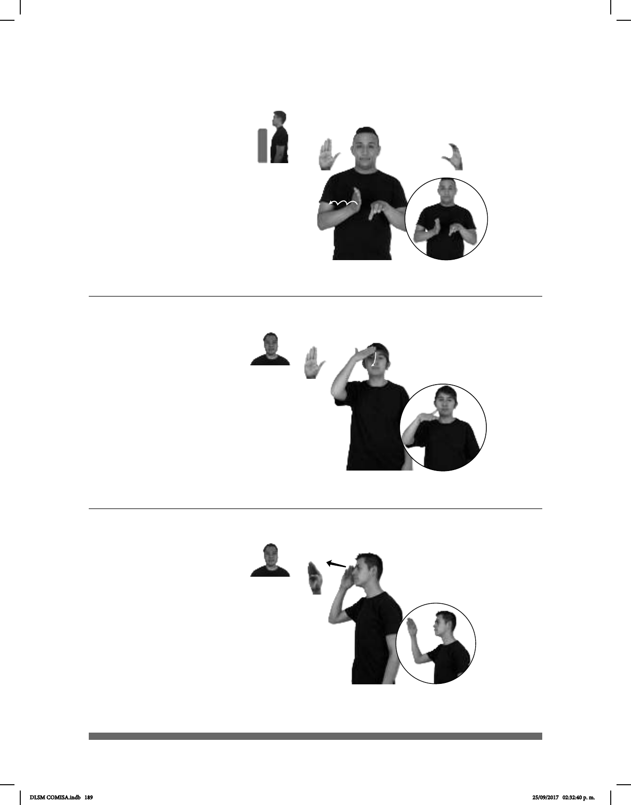

189
Rebanar (B-P 235)
(B-P 236)
PIZZA OCHO pro-ELLOS REBANAR
Ellos rebanaron la pizza en ocho partes.
dm-JUANA LSM pro-ELLA SABER
Juana sabe LSM.
Seña: SB
MD B-P.2, MB
C.1
MD palma hacia la
izquierda, MB palma hacia abajo.
MD y MB a la altura
del pecho.
La MD simula saltos
hacia la izquierda.
v. tr. Hacer rebanadas,
cortar o dividir una cosa de una
parte a otra.
Seña: SM
B-P.2
La palma inicia
oblicua hacia la izquierda y hacia
abajo y termina hacia abajo.
De la frente al cuello.
La mano se mueve
formando un arco.
v. tr. Tener noticia o
conocimiento de algo.
Señor (B-P 237)
SEÑOR MARIO TIENDA TENER
El señor Mario tiene una tienda.
Seña: SM
B-P.3
Palma oblicua hacia
la izquierda y hacia abajo.
Sobre la frente.
Recto hacia enfrente.
sust. m. Término de
cortesía que se aplica a un hombre
adulto.
DLSM COMISA.indb 189 25/09/2017 02:32:40 p. m.